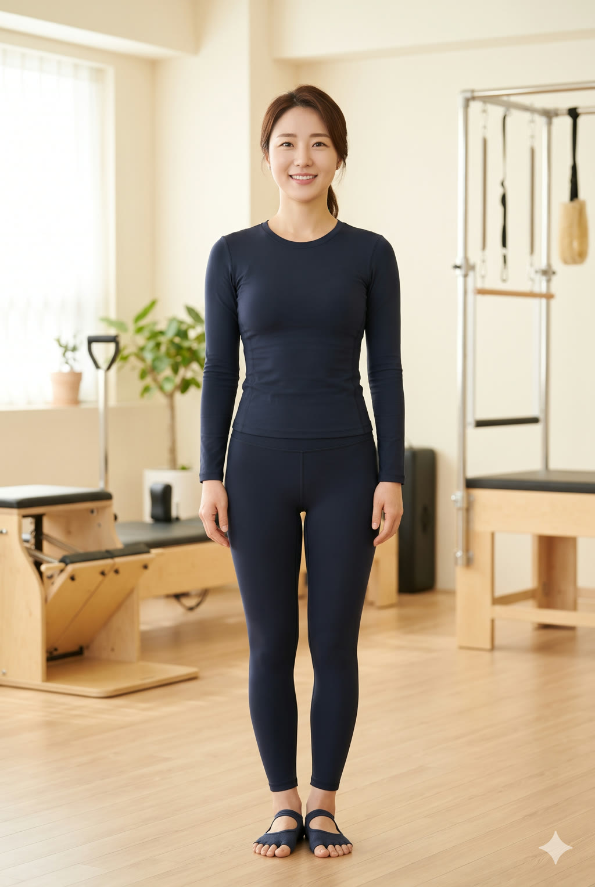

강미래 강사
입문·자세 교정 전문 — 순서 필라테스
안녕하세요, 강미래입니다. 스무네 살에 처음 올라선 필라테스 매트 위에서 저는 제 몸의 비대칭을 처음 알게 되었어요. 왼쪽으로 기울어진 골반, 한쪽으로만 열리는 어깨 — 그때 배운 것이 지금 수업의 바탕입니다. 몸은 힘으로 고쳐지지 않고, 순서대로 풀린다는 것. 그 순서를 회원님 몸에 맞게 찾아 드리는 것이 제 일입니다. 첫 수업은 움직이기 전에 관찰부터 시작해요. 서 있을 때 무게가 어디에 실리는지, 숨을 쉴 때 어느 쪽 갈비뼈가 먼저 열리는지, 앉았다 일어날 때 무릎이 어느 방향으로 가는지 — 같이 확인하고 기록으로 남깁니다. 다음 수업은 그 기록 위에서 시작하기 때문에 회원님은 '지난번보다 어디쯤 왔는지'를 감이 아니라 눈으로 보게 됩니다. 처음 필라테스를 시작하는 분의 첫 석 달을 설계하는 것이 저의 전문입니다.
첫 수업은 관찰과 기록으로 시작합니다 — 몸의 습관부터 같이 봐요
목·어깨·허리 순서대로 푸는 수업이라 처음에도 부담이 적어요
매 수업 기록을 남겨 다음 수업의 첫 장으로 삼습니다
- 입문 전문
- 서울 성동구
- 수업 기록 제공
자격 · LICENSES
- 필라테스 매트 지도자 과정국내 공인 교육기관 과정 이수 · 2018.06
- 리포머 기구 필라테스 지도자 과정국내 공인 교육기관 과정 이수 · 2021.03